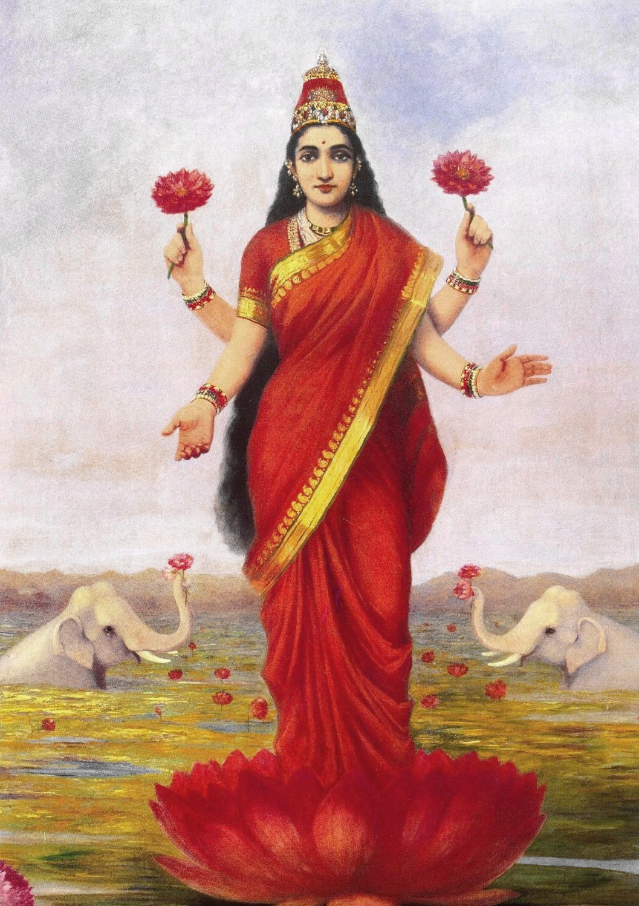

Dhanvantari
Divine physician — pray for healers, medicines, and the body’s longevity before festive excess.

धनतेरस
Diwali week begins — Dhanvantari’s pot of health, Lakshmi’s welcome, and mindful prosperity.
धनतेरस दीपावली श्रृंखला खोलता है — मुहूर्त/खरीद खोजों में शीर्ष। प्राचीन स्मृति में समुद्र से धन्वंतरि अमृत–कलश संग emerg हुए।
Dhanteras (Dhantrayodashi) opens the Diwali cluster and dominates pre-Diwali search charts for muhurat and shopping. Older dharma remembers Dhanvantari rising from the ocean with amrita and the physician’s art.
समुद्र मंथन में धन्वंतरि अमृत कलश लेकर प्रकट हुए — आयुर्वेद की पौराणिक जड़। कुछ घर यम दीप जलाते हैं; धातु बर्तन/सिक्के स्थिरता के चिह्न। कथा कहती है — बिना आरोग्य धन अधूरा।
During the Samudra Manthan, Lord Dhanvantari appeared bearing the nectar pot — mythic source of Ayurveda. Homes light lamps for Yama in some customs (to push back untimely death) and buy metal utensils or coins as symbols of household stability. The story’s edge: wealth that ignores health is incomplete; the physician–god arrives before the night of lamps.
लक्ष्मी–कुबेर पूजा समृद्धि को व्यवस्थित हिसाब से जोड़ती है। बाजार हड़बड़ी दान और ऋण शुद्धि न मिटाए।
Lakshmi–Kubera worship on this evening ties prosperity to orderly accounts. Ethical guides stress: do not let market frenzy erase dana and debt repayment.
Divine physician — pray for healers, medicines, and the body’s longevity before festive excess.
Invited with clean thresholds and honest ledgers — prosperity as responsibility.
प्रवासी ‘Dhanteras’ मंदिर समय और धातु खरीद खोजते हैं — न्यूज़लेटर में धन्वंतरि प्रार्थना जोड़ें।
Overseas Indians search ‘Dhanteras outside India’ for temple Lakshmi hours and bullion shop timings — pair with a short Dhanvantari prayer in community newsletters.
Save this festival to My Board to track ticks there.
Diwali week begins — Dhanvantari’s pot of health, Lakshmi’s welcome, and mindful prosperity.
Clean and light the entrance; optional Yama deepak as family custom Dhanvantari / Lakshmi puja; buy something useful for the home if you wish Prefer quality and need over panic shopping Set aside charity before festive spending
Lakshmi–Kubera worship on this evening ties prosperity to orderly accounts. Ethical guides stress: do not let market frenzy erase dana and debt repayment.
Help us validate this page: suggest a correction, add a detail, or highlight something useful for home puja readers.
Feedback is emailed to TirthaYatra for editorial review. It is not published live automatically (safer for quality and ads policy). You can also keep a personal copy on this device.